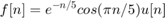
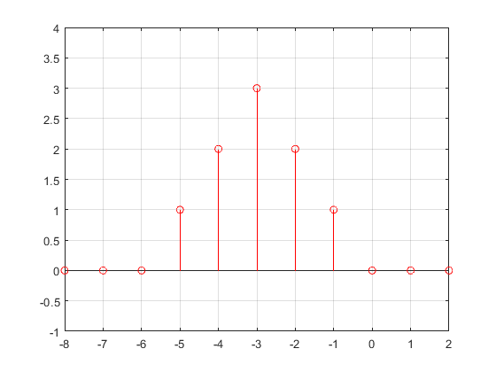

PRACTICA 4: SEÑALES EN TIEMPO DISCRETO
Contents
Integrantes
- Barrera Martinez Paola Angelica
- Espino Chavez Brandon Daniel
- Gonzalez Lopez Dani
- Villavicencio Salinas Miguel Angel
- Zetina Arellano Luis Enrique
Objetivos
- Manipulación básica de MATLAB
- Gráficas de señales reales y complejas discretas
- Transformación de señales discretas (escalamientos y traslaciones)
Introduccion.
Se hizo una investigacion para la resolucion del problema 3.11-2 por medio de python.
%El codigo quedo de la siguiente forma:
Se realizaron 3 graficas, la primer grafica de es:
La segunda grafica de :
%La tercer grafica de $$f[n/2]$ % % % <<Grafica3.png>> % %
Desarrollo
Ejercicio 1
Se resolvio el problema 1.11-2, el cual en base a la funcion:

Se definde la funcion y el rango que tendra n.
f = @(n) exp(-n/5).*cos(pi*n/5).*(n>=0); n = -10:1:10; y = f(n);
Segrafica la funcion para valores de
figure(1) stem(n, y); xlabel('Eje x'); ylabel('Eje y'); title('Gráfico '); hold on
Se vuelve a hacer una funcion para poder graficar la funcion y se grafica como se muestra acontinuacion:
f = @(n) exp(-2*n/5).*cos(pi*2*n/5).*(n>=0);
n = -10:1:10;
y = f(n*2);
figure(2)
stem(n, y);
hold on
Por ultimo se modifica la funcion para que se pueda graficar la funcion ![$$f[n/2]$](pratica_4_eq04379502971620214257.png) sin problemas, como se muestra acontinuacion:
sin problemas, como se muestra acontinuacion:
f = @(n) exp(-(n/2)/5).*cos(pi*(n/2)/5).*(n>=0); n = -10:1:10; y = f(n/2); figure(3) stem(n, y);
Ejercicio 2
Para la grafica que se muestra, realiza las siguientes transformaciones:
a) x[-n]
b) x[n+6]
c) x[n-6]
d) x[3n]
e) x[n/3]
f) x[3-n]
La gráfica original es
Tomamos a la funcion como dos diferentes, y después las unimos como una misma función
n=-20:20;
f1= @(n) n.* ((n>0)&(n<=3));
f2= @(n) (6-n).* ((n>=4)&(n<=6));
f= @(n) f2(n)+f1(n);
stem(n,f(n)); grid; %graficamos la señal discreta
axis ([-2 10 -1 4]); % limitamos el tamaño de la grafica, dando
% limites para los ejes
Para el inciso a) x[-n]
stem(n,f(-n),'r'); grid;
axis ([-8 2 -1 4]);
 Para el inciso b) x[n+6]
stem (n,f(n+6),'g'); grid;
axis ([-7 1 -1 4]);
Para el inciso c) x[n-6]
stem (n, f(n-6), 'b'); grid;
axis([5 13 -1 4]);
Para el inciso d) x[3n]
n=[0,1,2];
stem(n,f(3*n),'g'); grid;
axis([-2 3 -1 4])
Para el inciso e) x[n/3]
n=0:3:18; %Limitamos los valores para n, para que solo se grafiquen aquellos % multiplos de n stem (n,f(n/3),'c'); grid; axis([-1 20 -1 4]);
Para el inciso f) x[3-n]
stem (n,f(3-n),'k'); grid;
axis([-5 5 -1 4])
Ejercicio 3
Supongamos que existe un vector x en MATLAB, correspondiente a una duración finita. Señal DT x[n]
(a) Escriba una función de MATLAB que, cuando pasa el vector x, calcula y devuelve Ex, la energía de x[n].
(b) Escriba una función de MATLAB que, cuando pasa el vector x, calcula y devuelve Px, la potencia de x[n]. Supongamos que x[n] es periódico y ese vector x contiene datos para un número entero de períodos de x[n].
(a)
function Ex = calcular_energia(x) Función para calcular la energía de una señal discreta finita x[n] Entrada: x: vector que representa la señal discreta finita Salida: Ex: energía de la señal Calcula la energía como la suma de los cuadrados de los elementos del vector Ex = sum(x.^2); end
(b)
function Px = calcular_potencia(x) Función para calcular la potencia de una señal discreta finita x[n] Entrada: x: vector que representa la señal discreta finita Salida: Px: potencia de la señal
Calcula la potencia como la energía dividida por el número de elementos en el vector multiplicado por el inverso del número de períodos
L = length(x); % Longitud del vector x periodo = L / numel(unique(x)); % Número de muestras en un período Ex = calcular_energia(x); % Energía de la señal Px = Ex / L * (1 / periodo); % Potencia de la señal end
Para ejecutar se utiliza el siguiente codigo:
Definir un vector x[n] x = [1 2 3 4 5];
% Calcular la energía de x[n] % Ex = calcular_energia(x); % disp(['La energía de la señal es: ', num2str(Ex)]); % Calcular la potencia de x[n] % Px = calcular_potencia(x); % disp(['La potencia de la señal es: ',num2str(Px)]);
Ejercicio 4
Calcular la energia de la señal f[n] de la figura utilizando las funciones del paso anterior.
La señal es:
f=@(n) n.*(n>=-3).*(n<=3);
n= -5:5;
stem(n,f(n))
grid on
Mediante el codigo del paso 3 se calculo la energia de la señal f[n], se indican los valores del vector, y se manda llamar a la funcion "calcular energia"
x = [-9 -6 -3 0 3 6 9]; % Calcular la energía de x[n] Ex = calcular_energia(x); disp(['La energía de la señal es: ', num2str(Ex)]);
La energía de la señal es: 252
Posteriormente de solicito calcular la potencia de una señal periodica f[n] por medio de la funcion "Calcular potencia".
La señal a la que se le calculo lo potencia es la mismo que la anterior pero con un periodo de: 12
g=@(n) n.*(n>=-3).*(n<=3); k=@(n) (n+12).*(n>=-15).*(n<=-9); w=@(n) (n-12).*(n>=9).*(n<=15); f=@(n) g(n)+k(n)+w(n); n= -20:20; stem(n,f(n)) grid on x = [-9 -6 -3 0 3 6 9]; % Calcular la potencia de x[n] Px = calcular_potencia(x); disp(['La potencia de la señal es: ',num2str(Px)]);
La potencia de la señal es: 36
Ejercicio 5
%La aplicacion se ve asi: